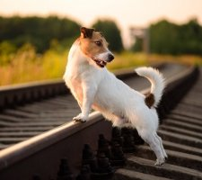
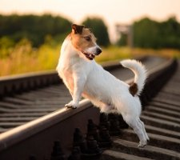

Інформація про породу джек-рассел-тер'єр и особливаості її характеру
Коротко про породу:
- Тривалість життя: 13-15 років
-
Схильність до слинотеча: низька
схильність до хропіння: низька
Схильність до гавкання: висока
Схильність до риття: висока
Потреба в спілкуванні увазі: середня
-
Шерсть:
Довжина: коротка
Тип вовни: двошаровий, гладка, жорстка
Забарвлення: білий, білий з чорними або коричневими плямами
Потреба в грумінг: низька
Історія
Джек-рассел - справжній службовий тер'єр. Порода отримала свою назву від преподобного Джека Рассела, який вивів одну з найдосконаліших різновидів тер'єрів для полювання на лисиць в Англії. Джек-рассел-тер'єр повинен був вигнати лисицю з нори своїм безперервним гавкотом, але не мав вбивати її. З свого появи на початку 19 століття джек-рассел-тер'єр розлучався строго для полювання.
Через генетичного різноманіття складових цієї породи в стандарті джек-рассел-тер'єрів є деякі варіації. Більш того, розбіжності з приводу довжини ніг цих собак привели до того, що в Англії їх розділили на дві окремі породи: довгоногу різновид назвали «Парсон-джек-рассел-тер'єр», а коротконогу просто «джек-рассел-тер'єр».
В Америці, незважаючи на переважну популярність коротконогих собак, саме довгонога різновид офіційно визнана породою «джек-рассел-тер'єр». Ця порода вже багато років користується успіхом у любителів коней.
Поява джек-рассел на телебаченні і в кіно, особливо популярність тер'єра на прізвисько Мус, який виконував роль пса Едді в телесеріалі «Фрейзер», і соккера, який був зіркою дитячого шоу «Кісточка бажань», додало цій породі ще більшу популярність.
Джек-рассел-тер'єр був не так давно включений в групу тер'єрів Американським клубом собаківництва, але його визнання супроводжувалося протестами заводчиків, які боялися, що воно може послужити породі погану службу. В результаті розбіжностей в США існує дві національні асоціації по цій породі: початковий Американський клуб джек-рассел-тер'єрів і недавно створена Американська асоціація джек-рассел-тер'єрів, визнана АКС.
Рассел тер'єр - надійний представник мисливських порід собак, походження якого - Сполучене Королівство. Ці собаки протягом багатьох років вели успішну полювання на лисиць. Зі своїми обов'язками мисливця Джек Рассел справляється відмінно. Природні інстинкти джека зобов'язують його господарів до певного, індивідуальному підходу у вихованні і догляді за домашнім улюбленцем. Цей різновид тер'єра дуже популярна завдяки своїй життєрадісності, рухливості, енергійності і відданості
. 

Цікаві Факти
- Собаки породи Джек-Рассел тер'єр є улюбленцями кінематографів. Собаки цієї породи зіграли ролі в багатьох фільмах, наприклад, в таких, як «Маска» (фільм приніс велику популярність), «Фрейзер», «Багряний приплив», «Артист» - фільм, який став популярним останнім часом і отримав премію Оскар. Саме за роль в цьому фільмі, пес по кличці Уггі отримав приз «Золота Пальма», яку йому вручили на відомому кінофестивалі в Лос-Анджелесі. Це перша собака в історії кінематографії, яка була удостоєна призу.
- Тілламук Чеддар - собака породи Джек-Рассел тер'єр, родом зі Сполучених Штатів, вважається одним з найвідоміших в світі тварин-художників. На даний момент пройшло вже кілька виставок її картин не тільки в США, але і в Бельгії, Голландії і на Бермудських островах. За деякі її роботи було заплачено навіть 2000 доларів.
- Відомі люди, які були або є на даний момент власниками Джек-Рассел тер'єрів: Бетт Мідлер, Чарльз, Серена Вільямс, Голді Хоун, Мерайя Кері, Пол Маккартні, Шарлотта Черч, Рик Стейн, а також бельгійський актор і комік Бенуа Пульворд